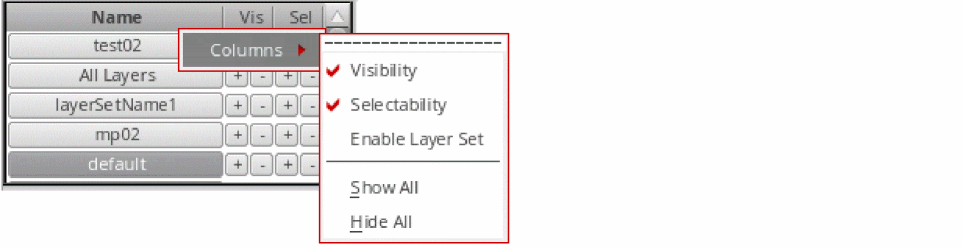
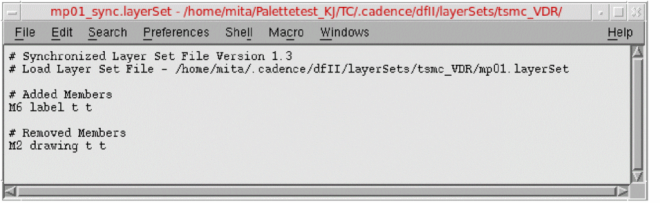

3
Palette Assistant
This section contains the following topics:
- Features of Palette Panels
- Window Context and Layer Sets
- About Synchronized Palettes
- Displaying and Hiding the Single Palette Assistant
- Palette Containers
- Layers Panel
- Objects Panel
- Grids Panel
Palette is a tool used to manage the context of layer, object, and grid items by editing their properties, such as visibility and selectability. The context is initialized with the information found in the technology file.
When you open a cellview, Palette is displayed by default, docked to the left of the layout window. It comprises three panels: Layers, Objects, and Grids. You can configure Palette to display the panels in three different types of containers, namely, single assistant, multiple assistants, and single window. By default, Palette opens in the single assistant container. For more information, see
Features of Palette Panels
The key features of the Palette panels are listed below:
- Can be used to configure the context of layer, object, and grid items by setting their visibility and selectability.
- Provide access to various layer properties, including routing directions, GDS numbers, and technology file properties such as validity, priority, function, description, and mask.
- Can be used to edit the routing direction of layers.
- Provide options to filter layer, object, and grid items.
- Can be used to manage the properties of layers individually and in groups.
- Support both synchronized and independent contexts for palettes attached to different layout windows.
- Provide access to the Options form that can be used to configure Palette default behavior.
- Can be used to configure Palette settings. The Palette configuration settings can be saved as part of a Virtuoso workspace.
Window Context and Layer Sets
Use Palette to manage the following:
Window Context
A window context determines display properties such as visibility and selectability of layers, objects, and grids in a layout window. Each layout window is controlled by a separate Palette. By default, all palettes initialized using the same technology file are synchronized. For example, the visibility property of a layer is identical in all layout windows if the palettes in these windows are synchronized.
For more information, see About Synchronized Palettes, Window Context (toolbar) and Synchronize/Desynchronize Window.
Layer Sets
A layer set contains a subset of layer-purpose pairs. You can use the Palette to set a layer set as active and to create new and modify existing layer sets. When you set a layer set as active, all layers, objects, and grids associated with that layer set are displayed in the Palette.
For more information, see Layer Set Manager and Layer Set.
About Synchronized Palettes
- Palettes that point to the same technology file are synchronized by default. If two palettes are synchronized, changes made in one Palette are reflected in the other Palette. For example, if you change the visibility of a layer-purpose pair in one Palette, the visibility of that layer-purpose pair are automatically updated in the other Palette.
- Palettes are desynchronized or independent of one another if they are linked to different technology files. For example, if the palettes in layout windows 1 and 2 point to different technology files, namely techfile 1 and techfile 2, the palettes are independent. The changes made in an independent Palette are not reflected in the other palettes.
If required, synchronized palettes can be desynchronized. For more information, see Window Context (toolbar) and Synchronize/Desynchronize Window.
Displaying and Hiding the Single Palette Assistant
To display the single Palette assistant, do one of the following:
- Choose Window – Assistants – Palette.
- Right-click anywhere in the layout window menu bar and choose Assistants – Palette.
To hide the single Palette assistant, do one of the following:
- Click the Hide button (X) in the Palette title bar.
- Right-click anywhere in the layout window menu bar and choose Assistants – Palette.
-
Use the
hiUnMapWindow(dwindow('ptePaletteAssistantX'))function, where X is the Palette instance number.
Palette Title Bar Buttons
The Palette title bar has the following buttons:
-
Help
Displays information about how to use the Palette. -
Float/Dock
Undocks the Palette assistant. Click the button again to dock the Palette assistant. -
Hide
Hides the Palette assistant.
Palette Containers
Layout Viewer supports the following types of Palette containers:
Single Assistant Container
Single assistant container encapsulates the Layers, Objects, and Grids panels into a single Palette assistant. Therefore, when you hide the Palette assistant, all three panels are hidden from view. If required, you can hide each panel individually. You can also dock or undock the entire Palette or each of the three panels individually.
Multiple Assistants Container
Multiple assistants container displays the Layers, Objects, and Grids panels as three separate assistants. These are also listed as three separate assistants on the Assistants menu that is displayed when you right-click in the menu bar area of the layout window. You can hide or unhide each panel individually. Each panel can also be docked or undocked individually.
Single Window Container
The single window container is similar to the Layer Selection Window (LSW). It encapsulates the Layers, Objects, and Grids panels in a single window that is independent of the layout window. In this mode, a single Palette window is used to manage all open designs. The three panels can be docked or undocked individually. You can also hide or unhide them individually.
To resize the window, use pteResizeSingleWindowPalette; to set the location of the window, use pteMoveSingleWindowPalette.
Setting the Palette Type
The default Palette container type is SingleAssistant. You can change the Palette container type by setting the CDS_PALETTE_TYPE Unix environment variable.
Type one of the following commands in the shell environment to set the Palette type:
setenv CDS_PALETTE_TYPE SingleAssistant
setenv CDS_PALETTE_TYPE MultiAssistant
setenv CDS_PALETTE_TYPE SingleWindow
CDS_PALETTE_TYPE Unix environment variable value must be set before running Virtuoso. Its value cannot be changed during a Virtuoso session.Layers Panel
By default, the Layers panel lists the layer-purpose pairs defined in the leLswLayers section of the technology file. Only valid layer-purpose pairs are displayed if the Valid check box is selected in the Scope toolbar. For more information, see Scope.
This section contains the following topics:
- Displaying and Hiding the Layers Panel
- User Interface
- Using Mouse Functions to Control Layer-Purpose Pairs
- Tasks in the Layers Panel
Displaying and Hiding the Layers Panel
Use one of the following methods to display the Layers panel:
- Right-click any panel title bar and choose Layers.
- Use the pteMapWindow function to specify the name of the Palette panel to be displayed.
Use one of the following methods to hide the Layers panel:
- Right-click any panel title bar and choose Layers.
- Use the pteUnmapWindow function to specify the name of the Palette panel to be hidden.
User Interface
The default Palette user interface is shown below:
The Layers panel user interface comprises the following components:
Title Bar Buttons
The Layers panel title bar has the following buttons:
-
Float/Dock
Undocks the Layers panel. Click the button again to dock the panel. -
Hide
Hides the Layers panel.
Toolbars
The Layers panel contains the following toolbars by default:
The following are additional toolbars available in the Layers panel.
To display these toolbars, right-click any toolbar that is displayed in the Layers panel, and then point to Tools and choose the required toolbar, as shown:
Layer Set
The Layer Set toolbar lists all layer sets available in the current design.
To make a layer set active, select it from the Layer Set list. All layers contained in the selected layer set are displayed in the Layers panel.
Corresponding SKILL Function: pteSetLSActive
Use the Layer Set commands available on the
Scope
The Scope toolbar provides options for filtering layers; namely, Valid, Used, and Routing.
- Valid: If selected, displays only valid layers.
-
Used: If selected, displays only the layers that contain design objects of type shape. If you want to view layers that contain all types of design objects, such as blockages, boundaries, instances, mosaics, markers, and rows, set the pteShowUsedSystemLpps environment variable to
t,and then select the Used check box. You need to reapply the filter to refresh the display in the Layers panel if you add a design object to a previously unused layer while the filter is still applied. -
Routing: If selected, displays only the routing layers.
Routing layers are identified at the start of a Virtuoso session. By default, the following layers are identified as routing layers:-
All layers with function metal, cut, and poly and purpose drawing through drawing9 You can exclude cut layers from routing layers by using the pteIncludeCutLayers environment variable. The value of this variable must be set before opening a design. Once set, it is applicable for the entire session.
- All layers with purpose drawing through drawing9 present in the validRoutingLayers constraint
- All combinations of the layers and purposes present in the validRoutingLPPs constraint.
-
All layers with function metal, cut, and poly and purpose drawing through drawing9
Search (Filter/Find)
Use the Search toolbar to search for specific layers. The default search mode is Filter. You can use the toolbar or the Options form to toggle between Filter and Find modes. For more information, see Search for a Layer.
Active Layer
The Active (Layer) toolbar displays the name of the layer that is currently active. The Active (Layer) list stores the history of up to 10 active layers for the current session.

Control Buttons
Use the Control Buttons toolbar to manage the visibility and selectability of layer-purpose pairs. The toolbar has the following control buttons:
-
AV — All Visible
Corresponding SKILL Function: pteSetAllVisible -
NV — None Visible
Corresponding SKILL Function: pteSetNoneVisible -
AS — All Selectable
Corresponding SKILL Function: pteSetAllSelectable -
NS — None Selectable
Corresponding SKILL Function: pteSetNoneSelectable
You can use the following three methods to control the visibility and selectability of layers:
-
Click a button on the Control Buttons toolbar or click the first option available on the drop-down menu associated with the button (for example, AV shown in the figure below).
Controls the visibility and selectability of all layers that are currently displayed in the Layers panel. For example, to set the selectability of all metal layers in the current layer set to not selectable, typemetalin the Filter field, and then click the NS button. -
Click the second option available on the drop-down menu associated with a control button (for example, AV - Layer Set shown in the figure below).
Controls the visibility and selectability of all layers in the active layer set, irrespective of the layers displayed in the Layers panel. -
Click the third option available on the drop-down menu associated with a control button (for example, AV - Technology File shown in the figure below).
Controls the visibility and selectability of all layers in the technology file.
Edit
The Edit toolbar provides the following options to add or remove items from layer sets:
-
Member: Select the Member check box to display the Membership column (m) in the Layers panel. Select or deselect a check box in the m column to add or remove the corresponding layer from the current layer set.
Corresponding SKILL Functions: -
Validity: Layers are specified as valid or invalid in the technology file. When you select the Validity check box, both valid and invalid layers are displayed in the Layers panel, and you also see both Validity (v) and Membership (m) columns displayed in the Layers panel.
You cannot set as valid a layer-purpose pair by using the Palette if:-
The layer or the purpose is set as invalid in the technology file, that is, the
validattribute for it is set tonil. -
The layer, the purpose, or the layer-purpose pair is locked, that is, the
allowSetToValidandallowSetToValidInSessionattributes for it are set tonilin the technology file.
However, you can use the Palette to set a locked layer-purpose pair as invalid.
For information about validity and lock attributes for layers, purposes, and layer-purpose pairs, see LPP Valid Functionality in Virtuoso® Technology Data ASCII Files Reference.
For information about the techIsLPValidBase SKILL API, see Virtuoso® Technology Data SKILL Reference.
Corresponding SKILL Functions: -
The layer or the purpose is set as invalid in the technology file, that is, the
In addition, the Edit toolbar provides a Discard Edits button that you can use to discard all changes made to the membership and validity status of layers.
Corresponding SKILL Function: pteDiscardLayerSetEdition
Window Context (toolbar)
The (Window) Context toolbar displays the name of the current display context, which, by default, is the technology file name.
In addition, the (Window) Context toolbar contains a Synchronize/Desynchronize button. Use this button to synchronize or desynchronize the palette. For more information, see About Synchronized Palettes and Synchronize/Desynchronize Window.
Layer Set Manager
The Layer Set Manager lists the layer sets that are enabled in the current design window.
Use the Layer Set Manager to perform the following tasks:
- Reorder layer sets by dragging them up and down the list.
-
Select one or more layer sets by using the following methods:
- To select a single layer set, click that layer set.
-
To select multiple adjacent layer sets, click the first layer set in the sequence, and then hold down the
Shiftkey and click the last layer set in the sequence. -
To select multiple non-adjacent layer sets, select a layer set, and then hold down the
Ctrlkey and click the other layer sets that you want to select.
All layer sets selected in the Layer Set Manager are considered active and a layer-purpose pair is displayed in the Layers panel if it is a member of at least one of the selected layer sets. -
Turn on or off the visibility or selectability status of all the layers present in a layer set by clicking the corresponding + or – button, respectively. These buttons work with respect to the filter settings defined on the Scope and Filter toolbars if the pteLSManagerRespectFilters environment variable is set to
t. - Set a layer set to active and turn on the visibility and selectability of all its member layers by clicking the layer set with the middle mouse button. The visibility and selectability for all other layers is turned off.
-
Disable a layer set by deselecting the corresponding check box in the column labeled E. This column is displayed when you right-click a column header in the Layer Set Manager and choose Columns – Enable Layer Set from the shortcut menu.
 -
Save the layer set order and status—whether enabled or disabled—in the
layerset.orderfile. For more information about how thelayerset.orderfile is saved and loaded, see Layer Set.
Palette Menu
The Palette menu is a context-sensitive menu that is displayed when you right-click any toolbar in the Layers panel or anywhere in the Objects and Grids panels (except the title bar and the column headers).
The following options are available on the Palette menu:
- Synchronize/Desynchronize Window
- Context
- Layer Set
- Edit Valid Layers
- Edit Layer Set Members
- Discard Edit
- Edit Display Resources
- Load
- Save
- Show Tools
- Options
- Bindkeys
MPT Support
The Palette MPT feature lets you view all layer-purpose pairs with color.
To enable the Palette MPT feature, choose MPT Support from the Palette context menu. This displays the MPT check box on the Scope toolbar and the Color (C) column in the Layers panel, indicating that MPT support is now enabled. As a result, all layer-purpose pairs with color are displayed in the Layers panel, grouped by their master layer-purpose pair, as shown below.
Each color and lock state combination for a layer-purpose pair is listed as a separate entry. When you set a layer-purpose pair as active, the color and lock state is automatically set for the shapes that you draw on that layer.
Corresponding SKILL Functions:
When you open a new layout window, the pteMPTScope environment variable is evaluated only if the pteMPTMode environment variable is set to t. The default value of both these environment variables is nil.
pteMPTMode and pteMPTScope environment variables to take effect in a new layout window, they must be set before you open the window.
To hide the MPT check box displayed on the Scope toolbar, set the nil.
You can use any of the following methods to enable compact mode:
-
Set the pteCompactMPT environment variable to
tat the start of a Virtuoso session to ensure that all layout windows have MPT Support set to compact mode by default. -
Use the pteSetOptionString SKILL function. This propagates a change to the
pteCompactMPTenvironment variable in all open layout windows in real time. For example, to enable compact mode, enter:
pteSetOptionString("pteCompactMPT" "t") - Select the Compact MPT mode check box in the Palette Options form in an open layout window.
Enabling compact mode hides the Color (C) column in the Layers panel and displays on the Active (Layer) toolbar the Color and Lock color options that you can use to select the color and lock state combination for a layer-purpose pair with color, as shown below.
When you enable compact mode, Color is set to mask1Color and Lock state is set to unlocked for an active layer-purpose pair with color, as shown above.
The Color and Lock color options are disabled for layer-purpose pairs without color. The Color for such layer-purpose pairs is set to g (grayColor), as shown below.
To display the two options that help control the visibility of colored shapes based on their lock status—Show Unlocked Colors and Show Locked Colors—set the t.

- Enable MPT support.
- (Optional) Select the MPT check box.
-
Set as active a layer-purpose pair with the required color and lock status.
Notice that the icons listed in the Color (C) column for each layer-purpose pair provide color as well as lock information. The swatch displayed in the first column indicates how a shape appears in the canvas.

-
Draw a shape. The color and lock state are automatically set for the shape.
- Use the Visibility (V) and Selectability (S) check boxes corresponding to a layer-purpose pair to control the visibility and selectability of shapes drawn on that layer.
Controlling the Display of Shapes
Shapes drawn on a layer become invisible if you deselect the Visibility (V) check box corresponding to that layer. However, if the shapes are drawn on a layer that supports color, their visibility is controlled by the Shape visibility by color visibility check box available in the Palette Options form:
- If this check box is selected, colored shapes become invisible if you deselect the Visibility (V) check box corresponding to the layers on which they are drawn.
-
If this check box is deselected, only the colored outline is hidden; the shapes remain visible, as shown below.
Controlling the Color Information Displayed in Palette
You can use the "", the default value, color information is displayed in the Palette for purposes drawing and pin, any purposes specified using the
If you now close the session and reset this environment variable to, say, "vdd", and then reopen the session, color information is listed in the Palette only for layers with purpose "vdd", as shown below.
envSetVal("mpt" "explicitColoredPurposes" 'string "vdd")

explicitColoredPurposes environment variable is reset during a session. Additionally, when you specify a purpose by using the explicitColoredPurposes environment variable, its child purposes are not included automatically. Therefore, you need to explicitly specify all purposes for which you want color information to be displayed in the Palette.
If shapes with color created in previous sessions are excluded in a new session by using this method, the shapes are no longer colorable. The visibility and selectability of such shapes can be controlled through the base layer-purpose pair (grayColor), which is listed for all excluded purposes, as shown in the example below.
When color information for Metal5 is excluded, the visibility and selectability of all Metal5 shapes, regardless of color-lock status, is controlled through the base layer-purpose pair.
When color information is available for Metal5, visibility and selectability can be controlled individually for each color-lock pair.
Performing a Search Based on Color and Lock Information
In the search field, with mode set to Filter, type:
-
maskN to search for layer-purpose pairs withmaskNColor, where N = 1, 2, … -
_lockto search for layer-purpose pairs with color set tolocked -
_unlockto search for layer-purpose pairs with color set tounlocked -
maskN_lockor_lock maskN to search for layer-purpose pairs withmaskNColorand color statelocked -
maskN_unlockor_unlock maskN to search for layer-purpose pairs withmaskNColorand color stateunlocked
All layer-purpose pairs that satisfy the search criteria are listed in the Layers panel. You can toggle the visibility and selectability of all filtered layers together by clicking the Visibility (V) and Selectability (S) column headers.

Saving Filtered Layer-Purpose Pairs to Layer Sets
After filtering layer-purpose pairs based on color and lock state, you can save them to a layer set file. This helps limit the number of layer-purpose pairs displayed in the Layers panel. The color and lock state is saved in the .layerset file along with the other attributes, as shown below. For more information, see Create a Layer Set.

The newly created layer set is automatically set as the current layer set and is displayed in the Layer Set list and the Layer Set Manager, as shown below:

You can use the buttons listed in the Vis and Sel columns to toggle with a single click the visibility and selectability of all layer-purpose pairs in the layer set. For more information, see Layer Set Manager.
When MPT scope is disabled, if you choose View By – Color, only the layer-purpose pairs without color are listed in the Layers panel, grouped by the color name (grayColor), as shown below:
If you choose an option other than Color on the View By menu, color and lock state information for layer-purpose pairs is not displayed. For information about other available options, see View By.
When you turn on MPT support, the layer-purpose pairs displayed in the Palette are by default sorted by color. As a result, layer-purpose pairs are organized into two distinct groups:
Layer-purpose pairs in each group are sorted within the group as follows:
- All layer-purpose pairs with color, grouped by their master layer-purpose pair, are sorted in alphabetical order.
- All layer-purpose pairs without color are sorted in the order specified by the selected attribute. For more information about the attributes on which you can sort layer-purpose pairs, see Sort By.
Sorting Together Colored and Uncolored Layer-Purpose Pairs
To sort all layer-purpose pairs, colored and uncolored, together as a single group, select the Color mixed sort check box in the Palette Options form or set the t. As a result, layer-purpose pairs when sorted are listed in the order defined by the selected attribute, such as swatch, layer name, purpose, and priority.
Layer-purpose pairs with color stay grouped by their master layer-purpose pair because each layer-purpose pair in a group has the same priority irrespective of color, as shown below:
Sorting within a Master Layer-Purpose Pair Group
Layer-purpose pairs within each master layer-purpose pair group are by default listed as follows: grayColor, mask1Color locked, mask1Color unlocked, mask2Color locked, mask2Color unlocked, and so on. To specify a different sort order, use the
For example, if you set this environment variable as shown below, the layer-purpose pairs within each master layer-purpose pair group are listed as follows: mask2Color locked, mask1Color locked, mask1Color unlocked, mask2Color unlocked, grayColor.
envSetVal("layout" "pteColoredLppSortOrder" 'string "m2l m1l m1u m2u g")

The layer-purpose pairs that are not included in the argument list follow the default sort order. For example, if you set the environment variable as shown below, the layer-purpose pairs within each master layer-purpose pair group are listed as follows: mask1Color locked, mask2Color locked, grayColor, mask1Color unlocked, mask2Color unlocked.
envSetVal("layout" "pteColoredLppSortOrder" 'string "m1l m2l")
Synchronize/Desynchronize Window
Use this command to synchronize or desynchronize a palette. For more information, see About Synchronized Palettes.
Corresponding SKILL Function: pteSetWindowSynchro
Context
This is the Palette window context.
Layer Set
The Layer Set submenu includes the following commands:
-
Save
Saves the changes made to a layer set file. The Save command is disabled when the All Layers layer set is selected. This is because All Layers is a system-generated layer set and cannot be modified.
Corresponding SKILL Function: pteSaveLayerSet -
Save As
Saves the layer set as a <layersetname>.layerSetfile in the specified layer set repository, which is a directory that stores layer set files.
The newly created layer set is automatically set as active and is displayed in the Layer Set list and the Layer Set Manager. For more information about how you can create a new layer set and synchronize it with another layer set, see Create a Layer Set.
Corresponding SKILL Functions: pteSaveAsLayerSet, pteSaveAsSynchronizedLayerSet -
Reload
Reloads the layer set that is currently in use. After making changes to the layer attributes, use the reload operation to re-synchronize the layer, object, and grid items.
The visibility and selectability statuses of layer, object, and grid items are also re-synchronized if the Layer Set Activation option is set to Filter and Apply V/S in the Options form. For more information about the Options form, see Set Palette Options.
Corresponding SKILL Function: pteReloadLayerSet -
Delete
Deletes a layer set from the Layers panel as well as from the layer set repository. For more information, see Delete a Layer Set.
Corresponding SKILL Function: pteDeleteLayerSet -
Import
Imports a layer set file from the file system to the layer set repository. The imported layer set is added to the Layer Set list in the Layers panel. For more information, see Import a Layer Set.
Corresponding SKILL Function: pteImportLayerSet -
Export
Helps save a layer set that exists in the layer set repository to the file system. For more information, see Export a Layer Set.
Corresponding SKILL Function: pteExportLayerSet -
Save Layer Set List
Saves the layer set order and status in thelayerset.orderfile in the.cadencedirectory at the specified location, which you can select from the Layer Set repository list in the Save Layer Set List form. When you start a new Virtuoso session, thelayerset.orderfile is loaded automatically based on the order of precedence defined in thesetup.locfile.
Corresponding SKILL Function: pteSaveLayerSetListInRepository
For more information about how you can manage layer sets, see Layer Set Manager.
Edit Valid Layers
Use this command to display the Membership (m) and Validity (v) columns in the Layers panel. For more information, see
Corresponding SKILL Functions: pteEditLayerSetValidity, pteCloseLayerSetEdition
Edit Layer Set Members
Use this command to display the Membership column (m) in the Layers panel. For more information, see
Corresponding SKILL Functions: pteEditLayerSet, pteCloseLayerSetEdition
Discard Edit
Use this command to discard all changes made to the membership and validity status of layers. For more information, see
Corresponding SKILL Functions: pteDiscardLayerSetEdition
Edit Display Resources
Use this command to display the Display Resource Editor form. In this form, you can change the appearance of the icon that is displayed for a layer in the Swatch column. For more information, see Virtuoso Technology Data User Guide.
Load
Use this command to update the current display context with information from one of the following file types:
Corresponding SKILL Functions: pteLoadLSWInfo, pteLoadFromTechFile, pteLoadGDSNumber
Save
Use this command to save the current display context into one of the following file types:
Corresponding SKILL Functions: pteSaveLSWInfo, pteSaveToTechFile, pteSaveGDSNumber
Show Tools
Use commands in the Show Tools submenu to selectively display or hide toolbars. You can display or hide all toolbars by using the Show All or Hide All commands, respectively.
Options
Choose Options on the Palette menu to open the Options form. In this form, you can define local and global Palette options. For more information, see Set Palette Options.
Corresponding SKILL Function: pteSetOptionString
Bindkeys
Use this command to open the Bindkey Editor, which displays a list of the default bindkeys defined for Palette-related options.
Use the Bindkey Editor to modify existing bindkeys or to define new bindkeys. For more information about using Bindkey Editor, see
Columns
The Layers panel, by default, displays the following columns:
-
Swatch, which sorts layer-purpose pairs in the order in which they appear in the
leLSWLayerssection of the technology file. - Layer, which displays the layer names.
- Purpose, which displays the purpose associated with the layers.
- V (Visibility), which determines whether the instances and objects on a layer are visible.
-
S (Selectability), which determines whether the instances and objects on a layer are selectable.To turn on or off the visibility or selectability of all layer-purpose pairs, objects, or elements together, click the V or S column header, respectively. To sort the layer-purpose pairs, objects, or elements based on their visibility or selectability, hold down the
Ctrlkey and click the V or S column header. This default behavior can be modified by using the Checkable Column Click option in the Palette Options form. For more information, see Set Palette Options.
All Layers panel columns are not displayed by default. For more information about how to display these additional columns, see Columns.
Column Header Menu
When you right-click a column header in the Layers panel, a context-sensitive menu is displayed.
The following commands are available on the column header menu:
Columns
The Layers panel Columns menu lists the following column names:
Swatch, Layer, Purpose, Function, Routing Dir, Mask, GDS Number, Priority, Min Voltage, Max Voltage, Signal Type, Parent, Description, Visibility, Selectability, Stipple, and LS Order.
Use this menu to selectively display columns in the Layers panel. You can hide or display all columns, except Swatch, by selecting the Hide All or Show All commands, respectively.
View By
Use the View By menu to display layer-purpose pairs in a tree structure in the Layers panel. You can view layer-purpose pairs on the following columns:
Layer, Purpose, Function, Color, Routing Dir, Mask, GDS Number, Priority, Min Voltage, Max Voltage, Signal Type, Parent, Description, Layer Set List, and None.
The column using which the layer-purpose pairs are arranged appears first.
If View By – Layer is selected, the layers with the same name, but different purposes, are grouped together. As a result, you can control the visibility and selectability of a layer and all the purposes associated with that layer by selecting or deselecting the V (Visibility) check box corresponding to the layer name. For example, if Metal1 layer has different purposes such as drawing, slot, and label, you can control the visibility and selectability of all Metal1 layer-purpose pairs together by selecting or deselecting the V (Visibility) and S (Selectability) check boxes corresponding to Metal1 layer. You can also modify the visibility and selectability of individual layer-purpose pairs, if required.
Selecting View By – Advanced displays the View By form. Use this form to specify display parameters at multiple levels. Layer-purpose pairs are displayed in a tree structure as per your specifications.
Sort By
Use the Sort By menu to sort layer-purpose pairs based on different columns. Each command on the Sort By menu corresponds to a column that can be displayed in the Layers panel. By default, the layer-purpose pairs in the Layers panel are sorted in the order in which they are defined in the leLswLayers section of the technology file.
The following sorting methods are available:
-
Swatch
Sorts layer-purpose pairs in the order in which they appear in theleLSWLayerssection. If this section is not available, layers are sorted based on their priorities. -
Layer
Sorts layer-purpose pairs in the alphabetical order by layer name. Layers with the same name but different purposes are sorted in the order of their priority. Layers for which a name is not specified are listed first, followed by layers with names. -
Purpose
Sorts layer-purpose pairs by their purpose, in the alphabetical order. Layers with the same purpose but different names are sorted in the order of their priority. Layers for which a purpose is not specified are listed first, followed by the layers with purposes. -
Function
Sorts layer-purpose pairs by their function, in the alphabetical order. Layer-purpose pairs for which the function is not specified are listed first, followed by the layer-purpose pairs for which the function is specified. -
Routing Dir
Sorts layer-purpose pairs by their routing direction. Layer-purpose pairs for which the routing direction is not defined are listed first, followed by the layer-purpose pairs with the routing direction defined. Layer-purpose pairs are sorted in the following order of routing direction:
Horizontal, Left Diagonal, None, Right Diagonal, and Vertical
You can change the routing direction by clicking in the Routing Dir column for a layer-purpose pair. A list is displayed as shown in the following figure:
To change the routing direction for the selected layer-purpose pair, select a routing direction from the displayed list. -
Mask
Sorts layer-purpose pairs in the ascending order of the mask number assigned to them in theLayer Definitionsection of the technology file. Layer-purpose pairs that do not have mask numbers assigned are listed first, followed by the layer-purpose pairs with mask numbers. -
GDS Number
Sorts layer-purpose pairs in the increasing order of their GDS numbers.
The GDS Number column displays both the Layer Stream Number and the Datatype Stream Number separated by a ‘:’. These numbers are present in the optional<techLibName>.layermapfile that is stored in the technology library directory. If this file is not found, the Palette automatically searches for a<techLibName>.gdsnumberfile in the.cadence/dfII/gdsnumberdirectory. If both these files are not available, nothing is displayed in the GDS Number column. -
Priority
Sorts layer-purpose pairs in the descending order of the priorities assigned to them in theLayer Definitionsection of the technology file. Layer-purpose pairs with priority 0 are displayed first. -
Min Voltage
Sorts layer-purpose pairs in the ascending order of the minimum voltage assigned to them in theLayer Definitionsection of the technology file. The value is either an integer or a float value. The layer-purpose pairs for which the minimum voltage is not specified are listed first, followed by the layer-purpose pairs for which the minimum voltage is specified. -
Max Voltage
Sorts layer-purpose pairs in the ascending order of the maximum voltage that is assigned to the layer-purpose pair in theLayer Definitionsection of the technology file. The value is either an integer or a float value. Layer-purpose pairs for which the maximum voltage is not specified are listed first, followed by the layer-purpose pairs for which the maximum voltage value is specified. -
Signal Type
Sorts layer-purpose pairs in the alphabetical order by signal type. The signal type indicates the signal that is carried by the nets routed with the layer-purpose pair. The signal type for a layer-purpose pair is specified in theLayer Definitionsection of the technology file. Layer-purpose pairs for which a signal type is not defined are listed first, followed by layer-purpose pairs with a signal type defined. -
Parent
Sorts layer-purpose pairs by the parent purpose of the layer-purpose pair, in the alphabetical order. The parent purpose is the main purpose of the layer from which you can define other purposes. The parent purpose for the layer is defined in theLayer Definitionsection of the technology file. The layer-purpose pairs for which the parent purpose is not defined are listed first, followed by the layer-purpose pairs for which the parent purpose is defined. -
Description
Sorts layer-purpose pairs by their descriptions, in the alphabetical order. The description field provides additional information about each layer-purpose pair, as specified in theLayer Definitionsection of the technology file. The layer-purpose pairs for which a description is not specified are listed first, followed by the layer-purpose pairs with a description. -
V (Visibility)
Sorts layer-purpose pairs by their visibility statuses. Layer-purpose pairs with the visibility check box deselected are listed first, followed by layer-purpose pairs with the visibility check box selected. -
S (Selectability)
Sorts layer-purpose pairs by their selectability statuses. Layer-purpose pairs with the selectability check box deselected are listed first, followed by layer-purpose pairs with the selectability check box grayed out. Layer-purpose pairs with the selectability check box selected are listed last. -
Stipple
Sorts layer-purpose pairs by the their stipple patterns. Layer-purpose pairs with the stipple check box deselected are listed first, followed by layer-purpose pairs with the stipple check box selected. -
LS Order
Sorts layer-purpose pairs in the increasing order of their layer set order numbers. -
Reverse
Reverses the order in which the layer-purpose pairs are currently displayed.
Hide This Column
Use this command to hide a column in the Layers panel.
Show
Use the Show menu as an extended filter mechanism to filter layers based on the values of specific columns. Right-click a column header, except V (Visibility) and S (Selectability) columns, and choose Show. In the following example, the Show menu is displayed for the Purpose column.
The Show menu includes the following filter options:
- All: No filter is applied. All layers are displayed.
-
Custom: Enables you to define criteria based on which layers are filtered. For example, selecting the Custom option for the Purpose column displays the Custom Show Purpose form.
To define a criterion, select an operator, a purpose, and click either OK or Apply. You can add multiple criteria. Click Add Criteria to add a new criterion. Depending on your requirement, you can choose to match any or all criteria.
For more information, see Custom Show Purpose Form. -
Selected values: You can also select the required purposes from the displayed list. To do this, hold down the
Ctrlkey while selecting multiple purposes, and then click OK to apply the filter. Layers with the selected purposes are displayed in the Layers panel.
Using Mouse Functions to Control Layer-Purpose Pairs
You can perform the following actions to control layer-purpose pairs in the single-selection mode:
- To turn on or off the visibility of a layer-purpose pair, click the layer-purpose pair by using the middle mouse button.
-
To turn on or off the selectability of a layer-purpose pair, right-click the layer-purpose pair.The two functions listed above are available only if the pteEnableMouseBindings environment variable is set to
t. - To set a layer-purpose pair as current (active), click the layer-purpose pair. The visibility status of the layer-purpose pair is turned on.
-
To change the appearance of a layer-purpose pair, hold down the
Shiftkey and click the layer-purpose pair. The Display Resource Editor form is displayed. For more information, see Edit Display Resources.This function is disabled if a user-defined trigger is registered. For more information, see pteRegisterUserSelectionTrigger. -
To make all but one layer-purpose pairs invisible, hold down the
Shiftkey and use the middle mouse button to click the layer-purpose pair that you want to make visible. -
To turn off the selectability of all layers but one, hold down the
Shiftkey and right-click that layer-purpose pair.
You can perform the following actions to control layer-purpose pairs in the multi-selection mode:
- To select the first layer-purpose pair and to set it as current (active), click the layer-purpose pair. The visibility status of the layer-purpose pair is turned on.
-
To extend the selection, hold down the
CtrlorShiftkey and click the layers that need to be added to the selection. -
To add or remove a layer-purpose pair from the current selection, hold down the
Ctrlkey and click that layer-purpose pair. - To view the multi-selection menu, right-click a layer-purpose pair.
- To reorder layer-purpose pairs, drag the required layer-purpose pair or a group of layer-purpose pairs up or down the list.
For more information, see Select Multiple Layers.
Tasks in the Layers Panel
By using the Layers panel, you can perform the following tasks.
- Search for a Layer
- Change the Current Active Layer
- Change Layer Appearance
- Load LSW Information
- Save LSW Information
- Create a Layer Set
- Delete a Layer Set
- Import a Layer Set
- Export a Layer Set
- Set Palette Options
- Objects Panel
- Select Multiple Layers
- MPT Support
Search for a Layer
Use the Search toolbar to search for specific layer-purpose pairs. The default search mode is Filter. You can set the search mode to Find by using the toolbar or the Options form. For more information, see Options.
When the search mode is set to Filter, only the layer-purpose pairs that match the specified search criteria are displayed in the Layers panel and the active layer information does not change.
In contrast, in Find mode, all layers continue to be displayed in the Layers panel and the first layer that matches the search criteria becomes the active layer. If you now press Enter, the next layer that matches the search criteria becomes the active layer. You can continue to press Enter to move through the list of matching layer-purpose pairs in a cyclic manner.
Additionally, in Find mode, search is performed only on the layers that are currently displayed in the Layers panel. For example, consider a layer set named ls1 that contains layers via1 to via10. Of these, only via1 to via3 are displayed in the Layers panel if the Used check box is selected. At this point, if you search for via5 by using Find, the search will be unsuccessful.
Corresponding SKILL Functions: pteFindNext, pteFindPrev

Click the Search History arrow (the Filter/Find drop-down list arrow ) to display the search history for the current session. Click the Clear
buttonFindCorresponding SKILL Function: pteClearSearchHistory
The Filter and Find toolbars are also available in the Objects and Grids panels.
Search String
Type a search string in the Filter or Find field in the Layers panel. As you type individual characters, you see the information in the panel getting updated. Finally, the search returns all layer-purpose pairs that contain the specified string in any of the displayed columns.
The advanced search options determine the results that a search operation returns. By default, the search operation is case-insensitive and looks for values that begin with the specified string (prefix). For more information, see Advanced Search.
If a search string contains a space, it is interpreted as two strings. In such cases, the search operation searches one by one for each string in all the displayed columns and returns layer-purpose pairs that have a column value starting with one of the two strings AND another column value starting with the other string. This too is the default behavior.
Corresponding SKILL Function: pteSetSearchText
Advanced Search
You can use the advanced search options to further refine search results. To access the advanced search options, click the Advanced arrow next to the Filter field.
The following advanced search options are available for both Filter and Find toolbars:
-
Find With
The options listed in the Find With section are used to specify default operators for a search operation: AND (All Of The Words), OR (Any Of The Words), EXACTLY (The Exact Phrase), and NOT (None Of The Words).
Corresponding SKILL Function: pteSetSearchOperator -
Match Word
The options listed in the Match Word section enable you to further refine the search by specifying whether a partial or an exact match is required. The options available are: Substring, Prefix, Exactly, and Suffix.
Corresponding SKILL Function: pteSetSearchMatchType -
Using Case
The options listed in the Using Case section let you specify whether the search operation is case-sensitive (Sensitive Match), or whether the casing of the specified search string can be ignored (Insensitive Match).
For example, to display search results that include string“M1”, and not“m1”, ensure that the Sensitive Match option is selected.
Corresponding SKILL Function: pteSetSearchMatchCase
Change the Current Active Layer
The layer-purpose pair displayed in the Active Layer toolbar is the one that is active.
Change Layer Appearance
The appearance of layer-purpose pairs in the layout and in the panels is defined by the technology file and the display.drf file. The display.drf file defines the display resources, including colors, stipples, line styles, and packets. Each packet is a named combination of stipple, line style, fill color, and outline color. Packets are associated with one or more layer-purpose pairs in the technology file.
To change a layer-purpose pair definition in the display.drf file, select the Edit Display Resources command from the Palette menu. The Display Resource Editor form is displayed.
You can change the color, stipple, and line style of the layer-purpose pair. For more information, see
Load LSW Information
To read the LSW information file, you can load it to the Layers panel.
-
From the Palette menu, choose Load – LSW Info. The Load LSW Info form is displayed.
-
Select the file that you want to load.
Specify the path if you want to load a file stored outside your current directory. -
Click Load.
The visibility and selectability settings defined in the LSW information file for layer-purpose pairs and objects are loaded to the current display context.
Corresponding SKILL Function: pteLoadLSWInfo
Save LSW Information
-
From the Palette menu, choose Save – LSW Info. The Save LSW Info form is displayed.
-
Select the file that you want to save.
Specify a file name if you want to save a file with a different name. -
Click Save.
The visibility and selectability settings from the current display context are saved in the specified LSW information file.
Corresponding SKILL Function: pteSaveLSWInfo
Create a Layer Set
-
From the Palette menu, choose Layer Set – Save As. The Save As Layer Set form appears, as shown in the following figure.

-
From the Layer Set repository list, select the repository (directory) in which you want to save the layer set file. For example, if you select
./.cadence, the file is saved at the following location:
./.cadence/dfII/layerSets/<technology library name>The Palette includes layer sets defined in severalThe.cadencedirectories, for example, the present working directory, the home directory, and the shared directory. The list of candidate directories and their order of precedence is defined in thesetup.locfile. When displayed in the Layer Set Manager and the Layer Set list, a suffix comprising a number enclosed in parentheses is added to the layer set name to indicate where a layer set is defined. This helps avoid ambiguity if a layer set is saved with the same name in several directories. The order of precedence specified insetup.locdetermines the value of the suffix. An exception to this rule are the layer sets stored in the.cadencedirectory listed first in the order of precedence. These layer sets are displayed without the suffix (1).setup.locfile is stored in the.cadencedirectory. For more information about thesetup.locfile, see Cadence Setup Search File: setup.loc in Cadence Application Infrastructure User Guide. -
In the Layer Set name field, specify a layer set name.If you specify the layer set name as
default, this layer set is set as the active layer set, instead of the All Layers layer set, when a cellview is first opened. Palette searches for the default layer set in the layer set repositories in the order specified in thesetup.locfile. If thesetup.locfile is unavailable, Palette searches for the default layer set in the.cadencerepository located in the present working directory. When the first layer set named default is found, the search stops. -
Select the Synchronized check box if you want to keep the layer set synchronized with the base layer set. As a result, any updates made to the base layer set are automatically reflected in your personalized layer set when you reload your layer set or start a new Virtuoso session.
The following figure shows the.layerSetfile for a synchronized layer set. Any layer-purpose pairs that you add or remove locally are listed in this file.
Corresponding SKILL Function: pteSaveAsSynchronizedLayerSet -
Click OK.
A layer set file is created with the specified name (<layersetname>.layerSet) in the selected layer set repository. The newly created layer set is automatically set as active and is displayed in the Layer Set list and the Layer Set Manager.
Corresponding SKILL Function: pteSaveAsLayerSet
A sample layer set file is shown below.
Delete a Layer Set
-
From the Palette menu, choose Layer Set – Delete. The Delete Layer Set form appears.
- The Layer Set repository field displays the name of the repository from which the layer set will be deleted. This is a non-editable field.
- From the Layer Set name drop-down list, select the layer set that you want to delete.
-
Click OK.
The layer set is deleted from the layer set repository and is no longer displayed in the Layer Set list and Layer Set Manager.
Corresponding SKILL Function: pteDeleteLayerSet
Import a Layer Set
-
From the Palette menu, choose Layer Set – Import. The Import Layer Set form appears.
-
Select the layer set file that you want to import.
Specify the path if you want to import a layer set file that is stored outside your current directory.
The selected file name is automatically displayed in the File name field in the Origin group box, as well as in the Layer Set name field in the Destination group box. - From the Layer Set repository drop-down list, select the layer set repository in which you want to save the layer set file. The layer set file is saved in the selected repository with the name that appears in the Layer Set name field.
-
Click Import.
The imported layer set is added to the Layer Set list in the Layers panel.
Corresponding SKILL Function: pteImportLayerSet
Export a Layer Set
-
From the Palette menu, choose Layer Set – Export. The Export Layer Set form appears.

- In the Origin group box, the Layer Set repository field displays the repository in which the layer set is stored. This is a non-editable field.
- From the Layer Set name drop-down list, select the layer set that you want to export.
-
In the File name field of the Destination group box, specify the name with which you want to save the layer set.
-
Click Export.
A new layer set is created in your present working directory.
Corresponding SKILL Function: pteExportLayerSet
Set Palette Options
To set Palette local and global options, choose Options from the Palette menu. The Options form is displayed.
The Options form includes the following fields:
- Keep windows synchronized: Initializes all new windows to synchronized state.
- Search Mode: Lets you switch between Filter and Find search modes. The toolbar displayed in the Palette is accordingly updated. The default Search Mode is Filter. For information about how to use the two modes, see Search for a Layer.
- Multi-select mode: Lets you select multiple layers at one time. Only one layer—the one selected first—is set as active. For more information, see Select Multiple Layers.
-
Auto Redraw: Sets the scope of the auto redraw feature. You can choose one of the following options:
- Off: Turns off the auto redraw feature. As a result, manual redraw is needed to update all windows.
- Current Window: Updates in real time the current window canvas whenever a change is made in a Palette panel.
- All Windows: Updates in real time all synchronized window canvases whenever a change is made in a Palette panel.
-
Layer Set Activation: Specifies how visibility and selectability status of layer-purpose pairs is affected when a layer set is made active.
- Filter only: Displays all layer-purpose pairs present in the selected layer sets. The visibility and selectability status of layer-purpose pairs remains unchanged.
- Filter and apply visibility, selectability: Displays all layer-purpose pairs present in the selected layer sets. The visibility and selectability status of layer-purpose pairs is reset to that defined in the layer set files.
- Force visibility and selectability only: Displays all layer-purpose pairs present in the selected layer sets. The visibility and selectability of all layer-purpose pairs is turned on.
-
Scope of 'All Layers’ Layer Set: By default, only the layer-purpose pairs defined in the
leLswLayerssection of the technology file are displayed in the Layers panel.
Choose one of the following options:-
LSW layers: Displays layer-purpose pairs defined in the
leLswLayerssection of the technology file. If this section is not available, all layer-purpose pairs defined in the technology file are displayed. -
Techfile layers: Displays all layer-purpose pairs defined in the technology file, even if the
leLswLayerssection is available.
-
LSW layers: Displays layer-purpose pairs defined in the
- Header Column Click: Defines the action to be performed when you click the Visibility (V), Selectability (S), Membership (m), and Validity (v) column headers in the Layers panel.
- Scope of Used Layers: Lets you specify the layers to display in the Layers panel. If different technology files are associated with the cellviews at different hierarchical levels in the design, only the layers defined in the technology file associated with the cellview are displayed in the Layers panel.
-
Depth for Visibility: Determines the number of layer-purpose pairs for which the visibility attribute is affected when you perform any of the following actions:
-
Hold down the
Ctrlkey and click a layer-purpose pair with the middle mouse button. This turns on or off the visibility of the layer-purpose pair that is clicked and the n layer-purpose pairs listed both above and below it, where n is equal to the visibility depth value, as shown below. -
Hold down the
CtrlandShiftkeys and click a layer-purpose pair with the middle mouse button. This sets as visible the layer-purpose pair that is clicked and the n layer-purpose pairs listed both above and below it, where n is equal to the visibility depth value. Additionally, this sets as active the layer-purpose pair that is clicked.
-
Hold down the
-
Depth for Selectability: Determines the number of layer-purpose pairs for which the selectability attribute is affected when you perform any of the following actions:
-
Hold down the
Ctrlkey and right-click a layer-purpose pair. This turns on or off the selectability of the layer-purpose pair that is clicked and the n layer-purpose pairs listed both above and below it, where n is equal to the selectability depth value, as shown below. -
Hold down the
CtrlandShiftkeys and right-click a layer-purpose pair. This turns on the selectability of the layer-purpose pair that is clicked and the n layer-purpose pairs listed both above and below it, where n is equal to the selectability depth value.
-
Hold down the
- Sync visibility/selectability by parent: If selected, propagates changes in the visibility and selectability status of parent objects and grids to child objects and grids. For more information, see Determining Visibility and Selectability in Objects and Grids Panels.
- Shape visibility by color visibility: If selected, colored shapes become invisible if you deselect the Visibility (V) check box corresponding to the layer-purpose pairs on which they are drawn. If deselected, only the colored outline is hidden; the shapes remain visible. For more information, see MPT Support.
- Color mixed sort: If selected, enables sorting on attributes other than color. For more information, see MPT Support.
- Compact MPT mode: If selected, hides the Color (C) column and displays on the Active (Layer) toolbar a set of color, lock state, and visibility controls. For more information, see MPT Support.
- Inverse color scheme: If selected, inverses the color scheme of the Palette panels.
- Movable tools: If selected, three vertical lines appear to the left of the toolbar name. When you point to these vertical lines, the pointer becomes a four-headed arrow. Drag the pointer to move a toolbar to a different location within the Palette panel to which it belongs.
For more information, see Palette Options Form.
Select Multiple Layers
- Choose Options from the Palette context menu. The Options form is displayed.
-
Select the Multi-select mode check box and click OK.
-
Hold down the
Ctrlkey and click the layer-purpose pairs that you want to select. To select a set of adjacent layer-purpose pairs, hold down theShiftkey and click the first and last layer-purpose pairs in the set.
-
Right-click the selection and use the Visibility, Selectability, Layer Set Member, Validity, Routing Direction, and Stipple options to set the corresponding attributes for the selected layers. The Layer Set Member and Validity options are available only when the Member or Validity check boxes are selected on the Edit toolbar. For more information, see Edit. The Routing Direction option is available only for routing layers.

To remove a layer from a multiple-layer selection, hold down the Ctrl key and click that layer.
Objects Panel
The Objects panel displays objects such as instances, pins, and vias. It is a dockable panel that replaces the LSW Object pane.
The Objects panel is displayed below the Layers panel. By default, objects in the Objects panel are listed in the order shown in the following figure.
Displaying and Hiding Objects Panel
Use one of the following methods to display the Objects panel:
- Right-click any panel title bar and choose Objects.
- Use the pteMapWindow function to specify the name of the Palette panel to be displayed.
Use one of the following methods to hide a Palette panel:
- Right-click any panel title bar and choose Objects.
- Use the pteUnmapWindow function to specify the name of the Palette panel to be hidden.
User Interface
The Objects panel user interface has the following components:
Title Bar Buttons
The Objects panel title bar has the following buttons:
-
Float/Dock
Undocks the Objects panel. Click the button again to dock the panel. -
Hide
Hides the Objects panel.
Toolbars
By default, the Objects panel does not display toolbars. To display a toolbar, right-click an object and choose Show Tools, followed by a toolbar name. For more information about toolbars, see Layers Panel.
Columns
The following columns are displayed in the Objects panel:
-
Objects
Displays objects listed in a hierarchical tree structure. -
V (Visibility)
Enables you to control the visibility of objects. To make an object visible, select the corresponding check box in the V (Visibility) column. -
S (Selectability)
Enables you to control the selection of objects. To select an object, select the corresponding check box in the S (Selectability) column. An invisible object cannot be selected.
You cannot resize the columns in the Objects panel.
Instance selection and visibility is controlled through the Objects panel. Pin visibility and selectability is determined by the visibility and selectability status of the layer-purpose pair of the corresponding pin figure. You can further control the selection of pins by using the
Blockage selection and visibility is controlled by the layer-purpose pair on which the blockage is created. You can further control the selection of blockages by using the
Column Header Context Menu
When you right-click a column header in the Objects panel, a context-sensitive menu is displayed, as shown in the following figure.
Columns Menu
The Columns menu can be used to selectively hide or display columns. The Hide All and Show All commands hide or display the Visibility and Selectability columns. The Objects column is not hidden from view when you choose the Hide All command.
Sort By Menu
You can use the Sort By menu to sort objects by object name, visibility, or selectability.
-
Objects
Sorts objects in the alphabetical order by name. -
Visibility
Sorts objects by visibility. The objects that cannot be made visible are listed first. These are followed by the objects for which the visibility check box is deselected. The objects for which the visibility check box is selected are listed last. -
Selectability
Sorts objects by selectability. The objects for which the selectability check box is deselected are listed first, followed by the objects for which the selectability check box is selected. -
Default
Sorts objects in the default order. The default order is as follows: Instances, Pins, Vias, Label, Shapes, Mosaic, Rulers, Markers, Fluid Guardring, Fluid Shapes, Fig Groups, Boundaries, Soft Blocks, Blockages, Symmetric Axes, and Rows. -
Reverse
Reverses the order in which the objects are currently displayed.
Hide This Column
This command enables you to hide a column displayed in the Objects panel. To hide a column, right-click the column header and choose Hide This Column.
Grids Panel
The Grids panel displays Tracks and Grids. It is a dockable panel that replaces the LSW Grid pane.
The Grids panel is displayed below the Layers panel. If both Objects and Grids panels are displayed, they appear on separate tabs and you need to click the Grids tab to view its contents.
Displaying and Hiding Grids Panel
Use one of the following methods to display the Grids panel:
- Right-click any panel title bar and choose Grids.
- Use the pteMapWindow function to specify the name of the Palette panel to be displayed.
Use one of the following methods to hide the Grids panel:
- Right-click any panel title bar and choose Grids.
- Use the pteUnmapWindow function to specify the name of the Palette panel to be hidden.
User Interface
The Grids panel user interface has the following components:
Title Bar Buttons
The Grids panel title bar has the following buttons:
-
Float/Dock
Undocks the Grids panel. Click the button again to dock the panel. -
Hide
Hides the Grids panel.
Toolbars
By default, the Grids panel does not display toolbars. To display a toolbar, right-click an element and choose Show Tools, followed by a toolbar name. For more information about toolbars, see Layers Panel.
Columns
The following columns are displayed in the Grids panel:
-
Grids
Displays elements in a hierarchical tree structure. -
V (Visibility)
Enables you to control the visibility of elements. To make an element visible, select the corresponding check box in the V (Visibility) column.
Column Header Context Menu
When you right-click a column header in the Grids panel, a context-sensitive menu is displayed, as shown in the following figure.
Columns Menu
The Columns menu can be used to selectively hide or display columns. The Hide All and Show All commands hide or display the V (Visibility) column. The Grids column is not hidden from view when you choose the Hide All command.
Sort By Menu
You can use the Sort By menu to sort the elements displayed in the Grids panel by element name and visibility.
-
Grids
Sorts elements in the alphabetical order by name. -
Visibility
Sorts elements by visibility. The elements for which the visibility check box is deselected are listed first, followed by the elements for which the visibility check box is selected. -
Default
Sorts elements in the default order. The default order is as follows: Tracks and Grids. -
Reverse
Reverses the order in which the elements are currently displayed.
Hide This Column
This command enables you to hide a column displayed in the Grids panel. To hide a column, right-click the column header and choose Hide This Column.
Determining Visibility and Selectability in Objects and Grids Panels
You can set the selectability and visibility of parent and child items in the Objects and Grids panels in the following two modes:
-
Synchronized mode
This is the default mode. In this mode, the parent and child items are in a synchronized state. This means that when you reset the visibility or selectability of a parent by clicking the corresponding check box, the visibility and selectability of the child items is set to coincide with that of the parent. If you now reset the visibility or selectability of a child, the parent is set to a partial check mode to indicate that one or more child items override the visibility or selectability settings of the parent, as shown in the following figure.
-
Desynchronized mode
In this mode, the parent and child items are in a desynchronized state. This means that the visibility and selectability of a child is not reset when you reset the visibility or selectability of the parent.
To understand this better, consider the Shapes object (parent) that has several child objects. Currently, only the Circle/Ellipse child object is set to visible. The other child objects are set to invisible.
If you now turn off the visibility of the parent by deselecting the corresponding Visibility (V) check box, the visibility and selectability states of the child objects are not affected. As a result, the Visibility (V) check box for the Circle/Ellipse child object stays selected, as shown in the following figure, but the child object would no longer be visible in the canvas.
If you next turn on the visibility of the parent, the visibility and selectability states of the child objects again remain unchanged, but the Circle/Ellipse child object becomes visible in the canvas.
Switching between Modes
You can use one of the following methods to switch between the two modes:
-
Use the pteApplyParentState environment variable.
The syntax for the environment variable is as follows:
layout pteApplyParentState 'boolean t/nil
By default, the environment variable is set to t, which is the synchronized mode. To switch to the desynchronized mode, set the environment variable to nil.
You can set the pteApplyParentState environment variable in the .cdsenv file before you run Virtuoso or by using envSetVal in CIW.
- Use the pteSetOptionString SKILL function.
- Use the CIW to run the following commands:
pteOpenForm("Options")
pteOptionForm->objectGridSynchro->value = t
pteOptionForm->OK->value = t
-
Use the Options form.
Right-click an item in the Objects or Grids panel and choose Options. The Options form is displayed. As shown in the following figure, the Sync visibility/selectability by parent check box is selected by default. This implies that the parent and child items are by default in the synchronized state. To switch to the desynchronized state, deselect this check box and click Apply or OK.
Return to top